Once you have constructed the boiler, and added such blobs and gadgets as the smoke stack, safety valve, whistle and cylinders, it is time to animate the model by adding what are known as Steam Effects. If you look into an existing steam eng file, you will find a section like this:
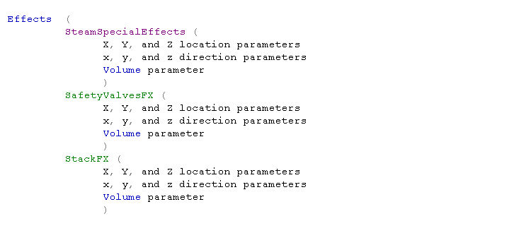
If you are using TSM to construct your model, the program will add the proper items to your eng file for you, if you know how to give it the proper instructions. In order for the smoke to come out of the stack, you not only have to have the proper wording in the eng file, but you must also draw a placeholder or token in the desired location, and give that placeholder the correct Reference Part Name.
Then you have to go to the eng file and adjust the three parameters under the particular effect that you are working on. Thus the major part of this tutorial is about how to set up the placeholder and then how to adjust the three parameters.
The first thing to do is to draw the Chimney or Smoke Stack placeholder in TSM. You do that by using the Create Polygon Tool to designate a small 3-sided polygon, which faces upwards. By small, I mean one that is perhaps 0.5 foot (0.15m) in radius.
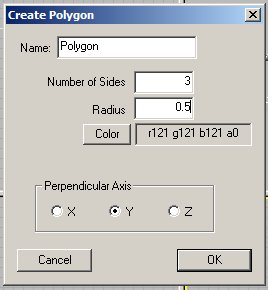
If you make it perpendicular to the Y axis it will be in the same plane as the horizon. And since it is only a single polygon, it only has one surface, and that faces upwards. You could make the polygon even smaller, but it turns out that it is not visible in the Sim in any event - small here means unobtrusive.
Once it is drawn, move it over the top of the smoke stack, as shown. Notice that the Z axis is along the track, the Y axis is vertical, and the X axis is orientated across the track. This is the same orientation that lights, and other objects have on engines.
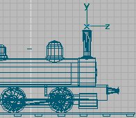
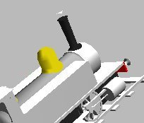
You can see the polygon in the perspective view of TSM, notice the white triangle just above the stack. When you look at it from a horizontal view, it seems to disappear.
Next we need to attend to the Part Properties and give the Smoke placeholder a Part Name, so press F2, and here is what you have:
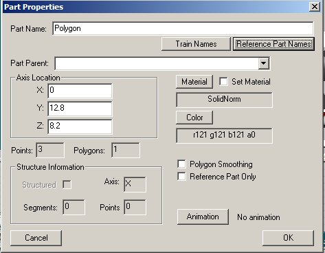
Smoke requires a special Reference Part Name in order to animate properly. Click on the Reference Part Names button and a new list of Special Reference Part Names appears. You are already familiar with the fact that Reference Parts do not show up in the Sim because you have undoubtedly used the Track Reference Part. The one on this list that makes sense is fx_StackFX, so select that one, and hit OK.
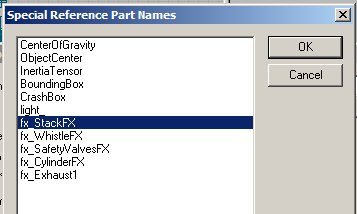
Now you are brought back to Part Properties, and you will see that your Part Name is the Reference Part Name that you selected. Unlike other animated parts, the Parts picked from the Reference Part Names do not need a Part Parent. But you do need to check the Reference Part Only box, toward the bottom.
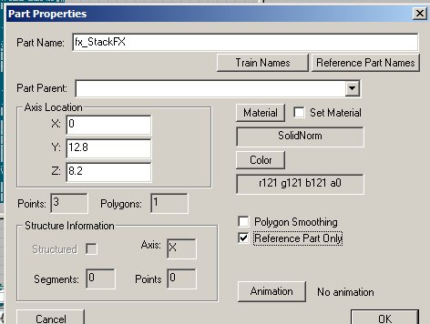
If you like, you can texture the fx_StackFX by choosing any color that you desire. Here I have colored it green, which you can see just above the stack.
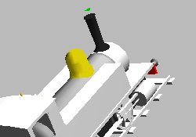
The advantage in doing so is that you can tell that you have it oriented properly, if the green colored side is facing upwardly. On the other hand, there is no real need to texture it at all. And in any event whether it is colored or not, if you have chosen a correct name for the part and if it is a Reference Part, the placeholder will not show up in the Sim.
Next we need to Create a Train Simulator Object and see how our smoke looks. If you have not already done so, you will need to pick a Filename, both short and long, and then fill in the blanks in Create Train Simulator Object. Be sure you also pick a Folder to put you steam engine into, and you must check the boxes dealing with the New eng or wag File, and the New Sound and Cab Files, even if doing so overwrites a prior eng file. The reason is that the eng file needs to have the Special Steam Effects language written into it, and TSM will do it for you since you have chosen a Reference Part Name.
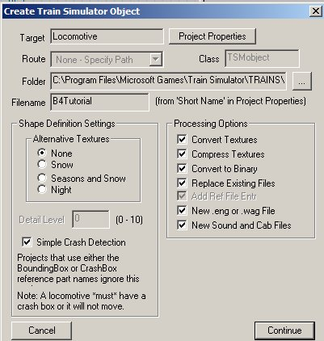
Check the boxes then press Continue and your engine will be generated so that it is ready to be put in the Sim by the Consist Editor. But first take a peek into the newly created (or recreated) eng file. You should find a new section dealing with SteamSpecialEffects in the middle of the eng file:
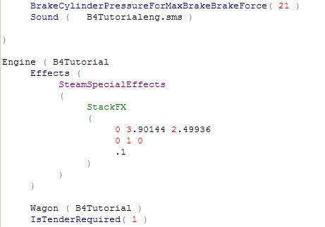
Now you have only created the smoke for the Stack at this point so this should be the only SteamSpecialEffect listed. Also note that three sets of numbers have been generated by TSM, and placed under the entry StackFX. What do these numbers mean?
Well the first row is the physical location parameter of the little polygon placeholder that you set. The numbers mean that the polygon is located at X=0, Y=3.90144 meters up from the track or origin of the engine, and Z=2.49936 meters in front of the center of the engine along the track. The second row tells you the direction that this particular effect, smoke, will be pointed. Hence, X=0, Y=1, and Z=0, or the smoke will not be going to the left nor right (X), and not forward or backward (Z), but only vertically up (Y). Another way to look at this is that the 3 numbers define a vector in space. The X and Z axes define a horizontal plane, and the Y axis is vertical. So, if you want the smoke to be emitted vertically, then 0 1 0 defines a vector normal to the X-Z plane, or pointing straight up. The third row is an indication of the volume of smoke to be generated. Often you will see a notation to the effect that the third row number signifies the width of the nozzle. Hence you would think that the larger the number the greater the amount of smoke.
However this is not true. It appears to be the reciprocal, and does not seem to have anything to do with width. If you want more smoke, then make the number small, like 0.1 and if you want less smoke then make the number larger, like 0.5. Now this is not strictly true either, because there are other parameters in the eng file that must be taken into account, and they also affect the volume and color of the smoke.
JW Titus, who has done considerable experimenting in this area, says that
"This parameter sets the radius of the smoke port thereby determining the area over which the smoke is distributed. For a given volume of smoke, a smaller area produces a denser smoke column but not as big around; a larger area, a thinner smoke column spread out over the larger area. The volume of smoke is controlled first in the .eng file. See Tech Docs "Eng_and_wag_file_reference_guide.doc": 'CoalBurnage'; 'ExhaustLimit'; 'SteamSmokeUnitsPerPoundOfFuel'; 'SteamMaxSmokeUnitsReleaseRate'; and 'BasicCoalUsage'. These parameters control the basic smoke and steam volume and expulsion rates. Having set these, then the volume and rate of smoke generation is further affected by settings of the various engine controllers in the cab, during operation."
But I am getting ahead of myself. Let's go into the Consist Editor and make up a consist with our now smoking engine and see how it looks. Here is the Consist Editor........
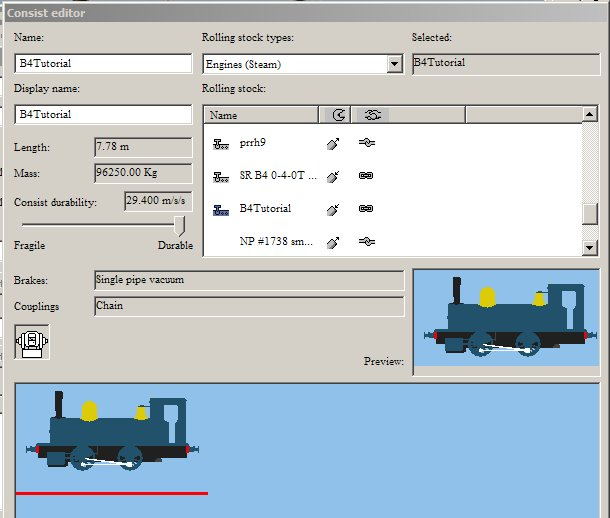
........and you should know how to create an engine and get it up and running. Let's go to the Sim and see what we have.
Notice that we now have smoke and a goodly amount of it too. Also note the green triangle or polygon is not visible above the stack. And note the smoke is starting somewhat above the top of the stack, and needs to be lowered down a bit.
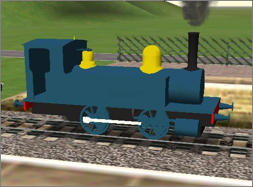
Go back to TSM, where we will adjust the height of the start of the smoke. We do this little trick by simply moving the polygon part fx_StackFX down a bit, while maintaining the X and Z locations directly over the top of the stack.
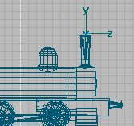
Then we go back to Create Train Simulator Object and check only some of the boxes, namely Convert to Binary, Replace Existing Files, New eng or wag File, and the New Sound and Cab Files. We need to check the New Engine box so that the relocation of the Reference Part will be transmitted to the eng file. We need to check the New Sound box also because if we don't the engine for some unknown reason will not show up in the Sim. I can not explain why, just trust me.
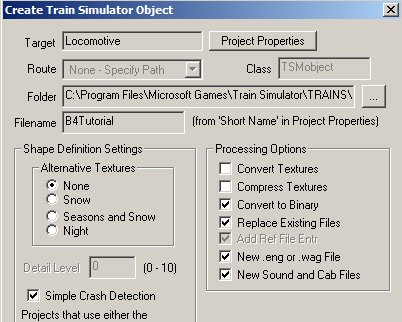
And here is what we have when we look at the lowered smoke in the Sim:
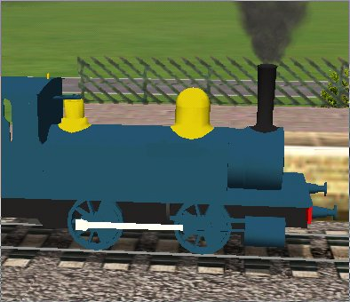
Not bad at all. We do not need to fiddle with the direction of the smoke as it should go up, but we need to adjust the volume of smoke. This is simply done by changing the parameter in the third row from 0.1 to something else with less volume. Here are two photos showing 0.1 and 0.5 parameters. I finally settled for 0.38, but it is your choice.
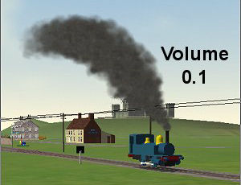
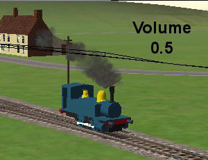